Creating a Permanent Base
Surveyor:  / Express:
/ Express:  / Express Plus: / Facet: / Facet L-Band: / Reference Station:
/ Express Plus: / Facet: / Facet L-Band: / Reference Station: 
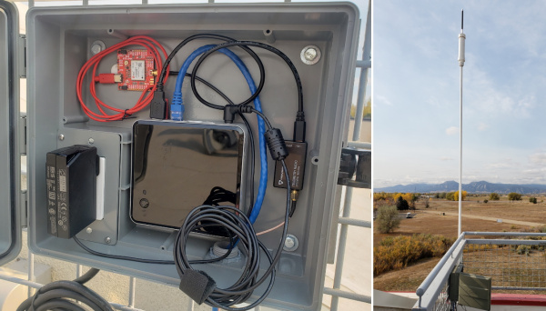
The base station at SparkFun
This section goes into depth on how to gather the data using an RTK product to create a permanent fixed base.
Note: The RTK Facet and RTK Facet L-Band are rated IP53 - Protected from limited dust ingress and water spray. As such it is not recommended for permanent outdoor deployment. Use the RTK Surveyor or Express placed inside (or protected from the elements) with a fully sealed TOP106 antenna placed outside with a clear view of the sky.
Note: The RTK Express Plus does not support Base mode.
Temporary vs. Fixed Base
There are two types of bases: Surveyed and Fixed. A surveyed base is often a temporary base set up in the field. Called a 'Survey-In', this is less accurate but requires only 60 seconds to complete. The 'Fixed' base is much more accurate but the precise location at which the antenna is located must be known. A fixed base is often a structure with an antenna bolted to the side. Raw satellite signals are gathered for a few hours and then processed using Precision Point Position.
In a separate tutorial, we described how to create a temporary base station with the 1 to 10-minute survey-in method. The temporary base method is flexible, but it is not as accurate and can vary dramatically in the time required. The ZED-F9P has a much faster way to provide base corrections: if you know the location of your antenna, you can set the coordinates of the receiver and it will immediately start providing RTCM corrections. The problem is ‘what is the location of the antenna?’. It’s as if you need a soldering iron to assemble your soldering iron kit. Where do we start?
Why don’t I just survey-in my fixed antenna to get its location?
While a survey-in is easy to set up and fine for an in-the-field way to establish the location of a base, it’s not recommended for getting the fixed location of a static base station as it is less accurate. Instead, PPP or Precise Point Positioning is far more accurate and is recommended for obtaining your antenna’s position. It’s a similar process but involves bouncing frick’n lasers off of satellites!
A major problem is that the predicted orbits are often off by one meter or more. Ground stations bounce lasers off the individual satellites as they pass overhead and use this new data to compute the actual orbits of the satellites. Using this new ephemeris data, when it becomes available, combined with the receiver’s raw data, better fixes can be computed. This is the basis of PPP.
From Gary Miller’s PPP HOWTO
{kind=link}
L1/L2 antenna semi-fixed to a flat roof
The PPP process works like this:
- Install an antenna in a fixed location
- Gather 24 hours' worth of raw GNSS data from that antenna
- Pass the raw data to a processing center for PPP
- Obtain a highly accurate position of the antenna we use to set a ‘Fixed Mode’ on a receiver
There are some great articles written about PPP. We’ll scrape the surface but for more information check out:
Affix Your Antenna
You don’t want your antenna moving once you’ve determined its position. Consider investing in a premium antenna but we’ve used the classic u-blox L1/L2 antenna with good success. Mount the antenna to a proper ground plane on a fixed surface that has a very clear view of the sky. No nearby anything.
{kind=link}
The u-blox antenna attached to SparkFun’s parapet
We mounted the u-blox antenna to the ferrous flashing around the top of the SparkFun building. While not completely permanent, the magnets on the u-blox antenna are tested to survive automobile strength winds so it should be fine in the 100+ MPH winds experienced in the front range of Colorado. The u-blox ANN-MB-00 antenna has a 5m cable attached but this was not long enough to get from the SparkFun roof to the receiver so we attached a 10m SMA extension. It’s true that most L1/L2 antennas have a built-in amplifier but every meter of extension and every connector will slightly degrade the GNSS signal. Limit the use of connector converters and use an extension as short as possible to get where you need.
If you want to use a higher-grade antenna that doesn’t have a magnetic base we’ve come up with a great way to create a stable fix point without the need for poking holes in your roof!
{kind=link}
Yes, that’s a cinder block. Don’t laugh. It works!
Most surveying grade antennas have a ⅝” 11-TPI (threads per inch) thread on the bottom of the antenna. Luckily, ⅝” 11-TPI is the thread found on wedge anchors in hardware stores in the US. Wedge anchors are designed to hold walls to foundations but luckily for us, we can use the same hardware to anchor an antenna. (We’ve also heard of concrete anchors that use epoxy so be sure to shop around.)

I needed to mount an antenna to my roof. Luckily, I had two, leftover cinder blocks from a weather station that, based on the Electric Imp, had long since been retired.
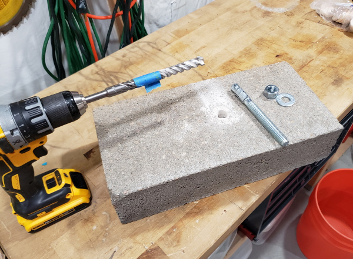
Step one is drilling the ⅝” hole into the cinder block. The masonry bit cost me $20 but cheaper, less fancy ones can be had for less than $10. The blue tape shows me the depth I’m trying to hit. The cinder block is 3.5” thick so I settled on ~2.5” deep. Once the hole is drilled, tip the block upside down to get most of the cement dust out. Then pound the anchor into place.
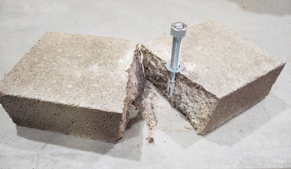
Oops!
Don’t get greedy! I pounded the anchor so far that it split the block. Luckily, I had a second block!
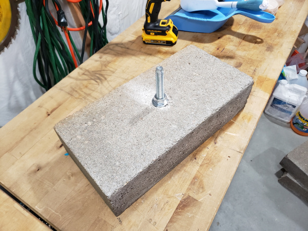
Once the anchor is ~2 inches into the hole tighten the bolt. This will draw the anchor back up compressing the collar into place. Note: I finger tightened the bolt and added a ½ turn with a wrench. If you really go after the bolt and tighten it too much you risk pushing the collar out further and breaking the cinder block in half (see Ooops! picture above). We are not anchoring a wall here, just a 400g antenna.
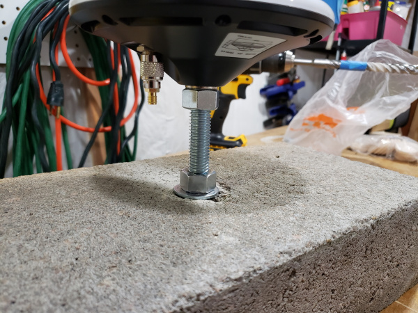
I used a 2nd bolt, tightened against the antenna base, to lock it into place and prevent rotation in either direction. Astute readers will notice my TNC to SMA adapter in the picture above. It’s the wrong gender. Originally, I used an SMA extension to connect my GPS-RTK-SMA to my u-blox L1/L2 antenna on my roof. The GPS-RTK-SMA expects a regular SMA connection so the end of the extension would not connect to this adapter. So before you get out the ladder, test connect everything! Luckily I have a set of adapters and found the right TNC to SMA converter to suit my needs.
It’s a bit of work getting 35lbs of concrete onto a roof but the view is pretty spectacular!
I wrapped the SMA extension once around the base. In case anything pulls on the SMA cable the tension will be transferred to the bolt rather than the TNC connection to the antenna.
Lightning Warning: My antenna profile is lower than the parapet so lightning strikes are unlikely. Your antenna may be the highest point around so consider lightning protection.
Gather Raw GNSS Data
Once you’ve got the antenna into a location where it will not move or be moved we need to establish its location. Power on your RTK unit and verify that you can get a lock and see 25+ satellites. Assuming you’ve got good reception, we now need to set the receiver to output raw data from the satellites.
You will need a microSD card that is 1GB up to 32GB formatted for FAT16 or FAT32.
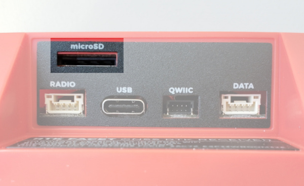
The microSD slot on the bottom of the RTK Facet
Enable RAWX and SFRBX
Power on the unit and using the serial or WiFi method, connect to the device.
Configure via WiFi

Expand the Message Rates sub-menu under the GNSS Config menu. Pressing the NMEAx5 + RXMx2 message button will turn off all messages and enable the following messages:
- NMEA-GGA, NMEA-SGA, NMEA-GST, NMEA-GSV, NMEA-RMC, RXM-RAWX, RXM-SFRBX
These seven sentences are commonly used when logging and doing Precise Point Positioning (PPP) or Post Processed Kinematics (PPK).
Press the 'Save and Exit' button. Upon reset, the unit should begin displaying a gradually increasing logging icon indicating successful logging.
Configure via Serial
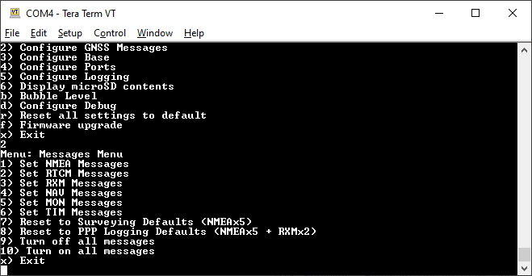
Press 2 and then 8 to enable the PPP logging defaults
After enabling the NMEA and RXM messages, exit from the serial menu by pressing x repeatedly. The system will save and apply the settings.
Once the RTK product is configured, power it up with microSD inserted, and leave the unit in Rover mode. This will record all the data (NMEA, UBX, and RAWX) from the receiver to a .ubx file. We do not yet know the location of the antenna so we stay in Rover mode to allow it to compile a large amount of satellite data. Only after we have confirmed its location should you enter **Base* mode.
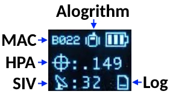
The logging icon will remain animated while the log file is increasing
Confirm Recording
Before leaving the unit for 6 to 24 hours, it is recommended that you capture a few minutes of RAWX log data, with the antenna located with a clear view of the sky, and then inspect the log to confirm everything is working correctly.

Getting UBX file from SD card
Remove the microSD from the RTK unit and open it on a computer. The latest log file is shown above. Note the file shown above is 492kB because it logged only ~60 seconds. Log files with RAWX and SFRBX and NMEA will grow in size to over 1GB across 24 hours.
The quickest method to verify RAWX logging is to open the UBX file with a text editor.

NMEA and UBX binary data viewed in Visual Studio Code
Your editor may render the binary UBX RAWX data in unknown ways. If you see NMEA ASCII sentences combined with large chunks of binary data, the RTK product is correctly logging RAWX data.
If you have u-center installed, you can more easily inspect for successful logging. Double click on a UBX file to open them in u-center.

Viewing a RAWX log in u-center
Press the play button (shown above) and you should see satellites quickly come in and out of view as u-center 'plays' back the log file.

RAWX packet within the Packet Console
Open the Packet Console and verify the UBX RXM-RAWX and SFRBX packets are logged. You are now ready to do a long survey of the antenna's position. Allow this to run for 24 hours. Don’t worry if you go long but do realize that a 24-hour file will be ~1GB so don’t let it run for a month.
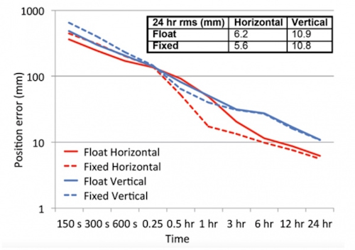
From Suelynn Choy's ‘GNSS Precision Point Positioning’ presentation 2018
Capturing 6 hours is good, 24 is slightly better (note the logarithmic scale for position error in the graph above). Most PPP analysis services will accept more than 24 hours of data but they may truncate it to 24 hours. If you capture 30 hours of RAWX data, that’s ok, we will show you how to trim a file that is too long.
Converting UBX to RINEX
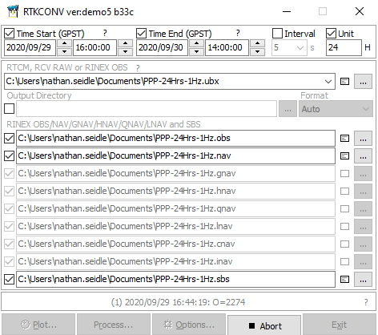
Once the 24-hour log file is obtained, the 1GB UBX file will need to be converted to RINEX (Receiver Independent Exchange Format). The popular RTKLIB is here to help. We recommend the rtklibexplorer’s modified version of RTKLIB (available for download here) but you can obtain the original RTKLIB here. Open RTKCONV. Select your UBX file and hit ‘Convert’. Our 300MB file took ~30 seconds to convert. You should see a *.obs file once complete.
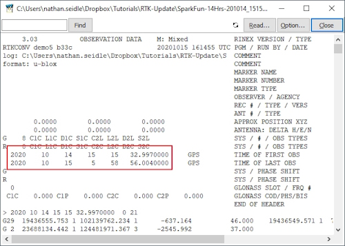
An OBS file with 14 hours of data
If your data file is 25 hours or a little more, that’s fine. If you need to cut your RINEX file down because it’s too large (or 40 hours long) you can trim the time window. Convert the entire file then click on the notepad icon to open the OBS file. You’ll see the GPS start time and stop time for this capture.
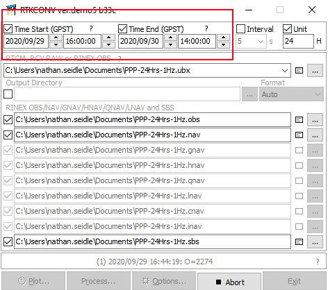
Using these times, you can limit the time window to whatever you need and re-convert the file.
Why don’t we crank up the fix rate? Moar is better!™
The RTK products can log fix rates up to 20Hz. Why not get RAWX data at greater than 1Hz? Because nature doesn’t move that fast. Most PPP analysis services will ignore anything greater than 1Hz. OPUS goes so far as to “decimate all recording rates to 30 seconds”. And, your OBS files will be monstrously large. If 24 hours is 1GB at 1Hz, it follows that 24 hours at 30Hz will be ~30 gigs. So no, keep it at 1Hz.
We now need to pass the raw GNSS satellite data in RINEX format (*.obs) through a post-processing center to try to get the actual location of the antenna. There are a handful of services but we’ve had great luck using the Canadian CSRS-PPP service. The US National Geodetic Service provides a service called OPUS but we found it to be frustratingly limited by file size and format issues. Your mileage may vary.
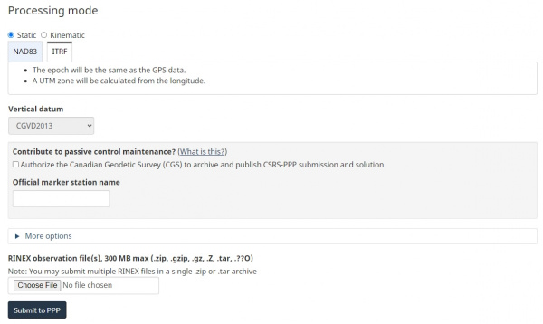
Zip your obs file then create an account with CSRS. Select ITRF then upload your file. Twiddle your thumbs for a few hours and you should receive an email that looks like this:
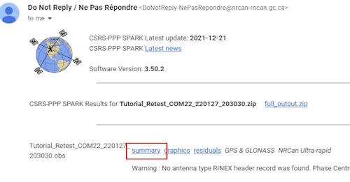
Click the 'Summary' link to open a summary of results. This summary contains the coordinates of your antenna in Geodetic, UTM, and Cartesian formats.
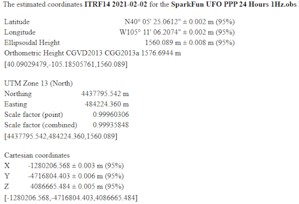
The SparkFun antenna with +/-2mm of accuracy! :O
The email will also include a fancy PDF report of your antenna’s location but does not include the Cartesian coordinates we will need later.
If all goes well you should have a very precise location for your antenna. For SparkFun RTK products we are most interested in ECEF coordinates. ECEF is fascinating. Rather than lat and long, ECEF is the number of meters from the internationally agreed-upon reference frame of the center of mass of the Earth. Basically, your ECEF coordinates are the distance you are from the center of the Earth. Neat.
Setting Fixed Location
Now that you’ve got the ECEF position of your antenna, let’s tell the RTK product where its antenna is located with a few millimeters of accuracy.
Configure via WiFi
Enter the WiFi AP config page or connect over Serial.

Setting ECEF coordinates over WiFi
Select Fixed and ECEF Coordinates then enter the coordinates obtained from the CSRS-PPP email.

Configuring NTRIP Server settings via WiFi Config AP
If your RTK product has access to a WiFi network, consider enabling the NTRIP Server. This will allow the RTK device to automatically begin transmitting its RTCM data to an NTRIP Caster once it has entered Fixed Base mode. See Creating NTRIP Caster for more information.
Save the settings to the RTK unit and exit.
Configure via Serial
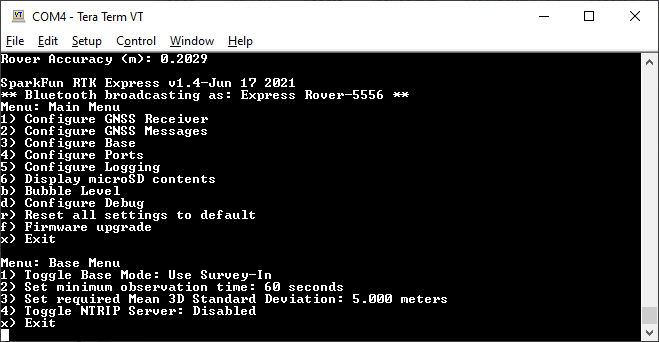
Base Menu Options
To configure over serial, press 3 to open the Base menu, then 1 to toggle the Base Mode to Fixed/Static Position, then enter the three ECEF coordinates.
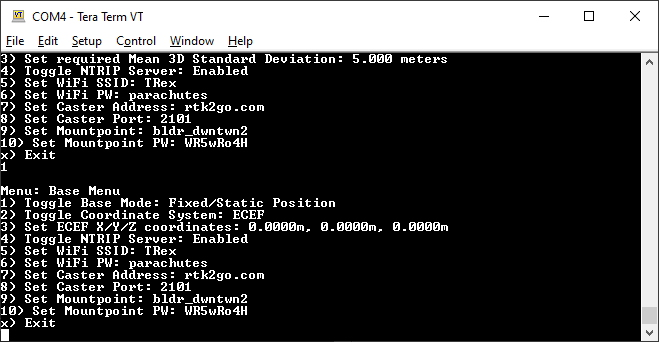
Settings for the NTRIP Server
If your RTK product has access to a WiFi network, consider enabling the NTRIP Server. This will allow the RTK device to automatically begin transmitting its RTCM data to an NTRIP Caster once it has entered Fixed Base mode. See Creating NTRIP Caster for more information.
Press x multiple times to exit the serial menu.
Beginning Base Mode
Power cycle the unit to load the Fixed ECEF coordinates. After boot, use the Setup button to enter Base mode.
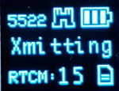
RTK Facet in Fixed Transmit Mode
Almost immediately after entering Base mode, the unit will begin outputting RTCM messages. These RTCM messages are sent to the RADIO port on the device. This is helpful for transmitting corrections via serial radio to any Rover units within a 10km baseline.
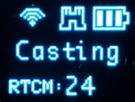
RTK Facet in Transmit Mode with NTRIP Server Enabled
If the NTRIP server is enabled the device will first attempt to connect over WiFi. The WiFi icon will blink until a WiFi connection is obtained. If the WiFi icon continually blinks be sure to check your SSID and PW for the local WiFi.
Once WiFi connects the device will attempt to connect to the NTRIP mount point. Once successful the display will show 'Casting' along with a solid WiFi icon. The number of successful RTCM transmissions will increase every second.
Creating NTRIP Caster
Your RTK device can both serve RTCM correction data (aka Server) to an NTRIP Caster and get RTCM correction data (aka Client) from an NTRIP Caster. But how does one get an NTRIP Caster?
There are a variety of Windows applications out there that claim to be an NTRIP caster. We found them to be generally terrible. The easiest solutions we've found are RTK2GO or Emlid Caster. Both are free and available to the public.
RTK2Go
RTK2Go seems to be a pet project of SNIP. We recommend creating a mount point and a password through RTK2GO.com. Yes, the RTK2go website looks spammy but the service works well and is used widely. Please see RTK2Go for details about creating an account. It's free and takes only a few minutes. Once activated you will be provided with your Mount Point name and Mount Point PW. These two credentials are used in an NTRIP Server setup:
NTRIP Server:
- Caster Host: rtk2go.com
- Caster Port: 2101
- Caster User Name: Not needed
- Caster User PW: Not needed
- Mount Point: Provided by RTK2Go
- Mount Point PW: Required and provided by RTK2Go
NTRIP Client:
- Caster Host: rtk2go.com
- Caster Port: 2101
- Caster User Name: Your Valid Email Address
- Caster User PW: Not needed
- Mount Point: Provided by RTK2Go
- Mount Point PW: Not Needed
The differences between Server and Client are small. The Server needs to know the mount point PW as it needs to be authorized to push data there. The Client needs to know which mount point but does not need a mount point password.
Note: You must provide a valid email address to RTK2Go. From RTK2Go:
It is now REQUIRED that all data consumers (Rover devices) provide a valid email address in the NTRIP Client user account name field when accessing the Caster.

The SparkFun Mount Point 'bldr_SparkFun1'
To verify that your RTK product is correctly broadcasting RTCM data, you can access RTK2Go from a browser on Port 2101. This link RTK2Go.com:2101 will show a list of all current NTRIP Servers that are pushing data to the RTK2Go caster, and are available to be accessed, free of charge, by any NTRIP Client in the world.
Emlid Caster
Emlid Caster is also very easy to set up and has a bit more user-friendly-looking website. Creating an account is very straightforward.

Emlid Mount Points with PWs removed
Once your account is created, you'll be presented with Mount Points and Rovers.
NTRIP Server:
- Caster Host: caster.emlid.com
- Caster Port: 2101
- Caster User Name: Not needed
- Caster User PW: Not needed
- Mount Point: Required. MP1979 for example. Shown in your mount point dashboard.
- Mount Point PW: Required. Shown in your mount point dashboard.
NTRIP Client:
- Caster Host: caster.emlid.com
- Caster Port: 2101
- Caster User Name: Required. Shown in your rover dashboard.
- Caster User PW: Required. Shown in your rover dashboard.
- Mount Point: Required. Shown in your rover dashboard.
- Mount Point PW: Not Needed
'Online' Badge Illuminated
To verify that your RTK product is correctly broadcasting RTCM data open the Emlid Caster dashboard. Once a device is successfully connected as a mount point or rover, the Emlid dashboard will turn green.